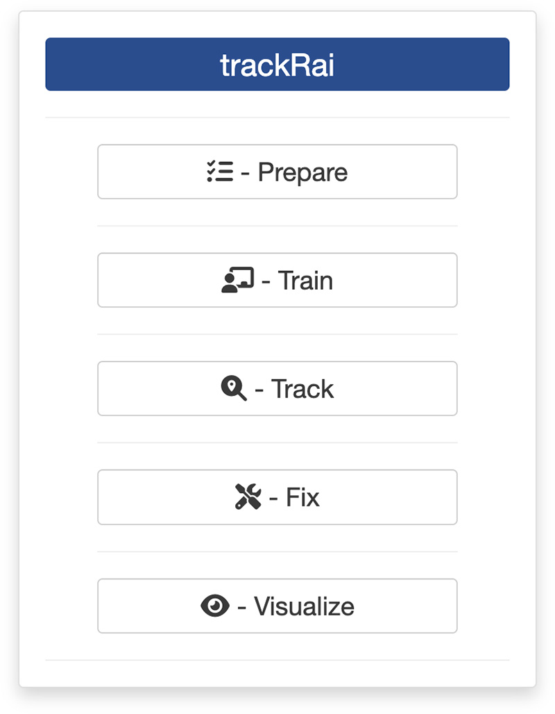
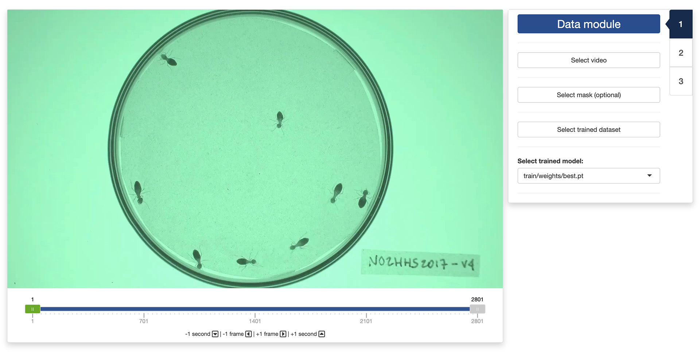
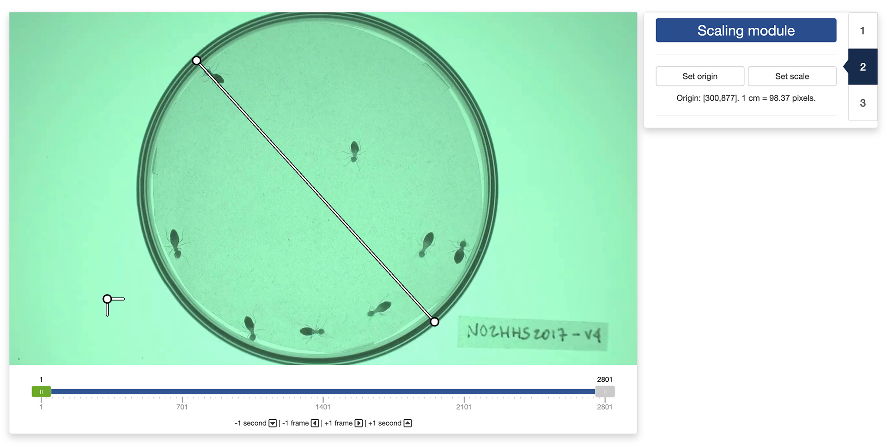
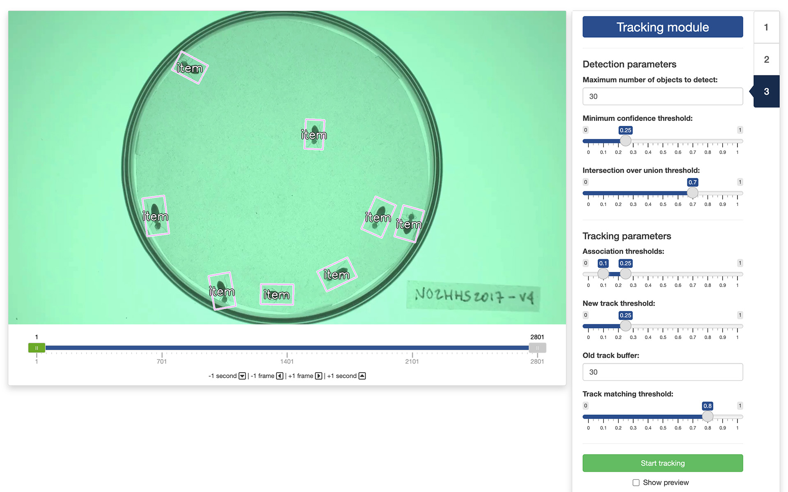
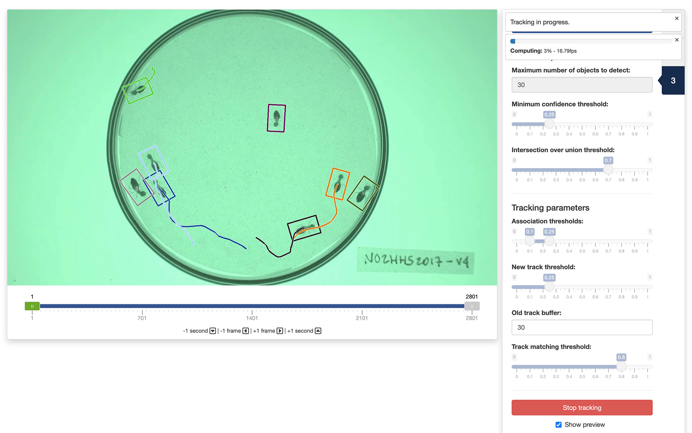

0. Introduction
Once you are ready to track objects in a video, you can launch trackRai by typing the following command in the R console:

This will open the app launcher either in the viewer pane of RStudio and Positron, or in a separate window, depending on your local configuration. In RStudio at least, you can control where the app opens by setting the launch.browser option. For instance:
trackRai(launch.browser = shiny::paneViewer())will launch the app in the RStudio viewer pane.
Once the launcher is running, click on the “Track” button to launch the tracking app. The launcher will close and the app will start shortly after. This app will help you track objects in a video using a trained YOLO11 model, as explained in the previous tutorial. While it is recommended to train the model on a machine with an NVIDIA graphics card and the CUDA framework installed, tracking can be done with reasonable performance on machines without these specifications.
1. Data module
Once the app opens, you will be presented with the “Data” module. First, you need to select a video by clicking the “Select video” button. You can also select an optional mask by clicking the “Select mask (optional)” button. This will load the video in the app. You can navigate through the video by sliding the green tab along the timeline displayed below the video. The gray tabs can be used to restrict the analysis to a specific time interval of the video. You can also use the arrow keys on your keyboard to navigate through the video: the left and right arrows allow you to navigate frame by frame; the up and down arrows allow you to navigate one second at a time.

Finally, you will need to select a trained YOLO dataset by clicking the “Select trained dataset” button and navigate to a folder containing a trained YOLO dataset (it should a folder named ”YOLO”). Select this folder. If the folder contains multiple trained models, you can select the one of your choice using the dropdown menu at the bottom of the sidebar.
Once the video and trained dataset are loaded in the app, the second tab of the app will become available and you can click on it to navigate there.
2. Scaling module
By default, the app will set the origin of the coordinate system to the top-left corner of the video. You can change this by clicking the “Set origin” button in the control panel. You then use your mouse to click on the location in the video frame where you want the origin to be.

You can also set a scaling factor for directly converting the pixel coordinates into real-world coordinates. For this, click on the “Set scale” button in the control panel. You then use your mouse to select two points in the video frame that are known to be at a certain distance apart in the real world. A pop-up window will ask you to enter the distance between these two points and the unit of measurement you want to use. The app will then automatically convert all the tracking results into real-world coordinates for you.
3. Tracking module
Finally, the tracking module is where all the magic happens. But before that, you will need to set a few parameters.
The detection parameters are used by YOLO to decide which parts of the image contains an object of interest. These parameters are:
- “Maximum number of objects to detect”: the maximum number of detected objects allowed per frame. This limits the total number of objects the model can detect in a single inference, preventing excessive outputs in dense scenes.
- “Minimum confidence threshold”: the minimum confidence threshold for detecting an object. Objects detected with confidence below this threshold will be disregarded. Adjusting this value can help reduce false positives.
- “Intersection over union threshold”: the threshold for non-maximum suppression. Lower values result in fewer detected objects by eliminating overlapping boxes, which can be useful for reducing duplicates.
The effect of these parameters on the detection quality can be seen directly in the display panel.

The tracking parameters are used by YOLO to decide which object in a given frame corresponds to which object in the following frame. These parameters are:
- “Association thresholds”: the highest value is the threshold used for initial association of a detected object with a track. If the detection’s score is above this threshold, the object is associated with a track in the first round of the association process. The lowest value is the threshold used for secondary association. If a detected object wasn’t associated in the first round and its score is higher than this, it might still be associated with a track in the second round of the association process.
- “New track threshold”: this is the threshold used for starting a new track. If a detected object doesn’t match any existing tracks and its score is above this threshold, a new track will be initialized.
- “Old track buffer”: this is the number of frames allowed to pass without receiving updates from a track before it will be removed. Higher values allow tracks to remain active longer without updates, which might help if an object is not detected in every single frame, but could also increase the risk of tracking errors.
- “Track matching threshold”: this threshold is used for matching tracks between consecutive frames. Only tracks with a score above this threshold are considered for matching.
You cannot directly observe the effect of this parameters in the display panel. However, you can run the tracking on a small portion of the video and use the “Show preview” mode to evaluate the quality of the resulting tracks.
Once you are satisfied with the selected parameters, you can start the tracking by clicking the “Start tracking” button. It will open a file browser where you can select where to save the results of the tracking. If you would like to see a preview of the tracks while the tracking is running, tick the “Show preview” tick box.

4. Output data
Once the app is done processing the video, the resulting CSV file will contain between 7 and 11 columns depending on whether you have set a real-world scale and origin in the “Scale module”. These columns will be the following:
- “frame” is the video frame number at which the measurements along the corresponding row have been made.
- “track” is the identity of the tracked object as estimated by the app.
- “x” is the x coordinate of the object location in pixels in the context of the video frame. The origin is set at the top-left corner of the frame.
- “y” is the y coordinate of the object location in pixels in the context of the video frame. The origin is set at the top-left corner of the frame.
- “width” is the width in pixels of the object.
- “height” is the height in pixels of the object.
- “angle” is the angle in degrees between the main axis of the object and the y axis.
If you have set a real-world scale and origin in the “Tracking module”, the following extra columns will be saved:
- “x_[unit]” is the x coordinate of the object location in real-world [unit]. The origin is set to the real-world equivalent to that you have defined in the “Scale module”.
- “y_[unit]” is the y coordinate of the object location in real-world [unit]. The origin is set to the real-world equivalent to that you have defined in the “Tracking module”.
- “width_[unit]” is the width in real-world [unit] of the object.
- “height_[unit]” is the height in real-world [unit] of the object.
The video used throughout this tutorial was provided by Sridhar, V. H., Roche, D. G., and Gingins, S. (2019). Tracktor: Image-based automated tracking of animal movement and behaviour. Methods Ecol. Evol. 10, 691. doi:10.1111/2041-210X.13166 and used here with permission of the authors.